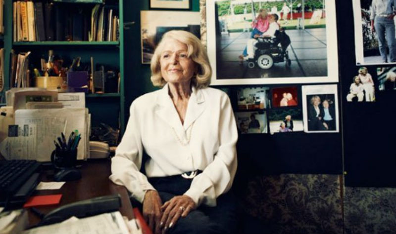

Her lawsuit overturned DOMA, which was ruled 'unconstitutional' by the Supreme Court
The following is a timeline of Edie's life:
1929 — Born in Philadelphia, Pennsylvania.
1930 — Edie's family suffered as a result of the Great Depression in the 1930's, and her father lost his candy-and-ice-cream store, as well as their home above it.
1950 — Edie received her bachelor's degree from Temple University. In college, Edie became engaged to Saul Windsor, but broke their engagement after she fell in love with a female classmate. However, after Windsor decided she did not want to live life as a lesbian, they reconciled and got married after graduation. They divorced less than one year afterward, and she confided in him that she longed to be with women.
1955 — Obtained her master's degree in mathematics from New York University. She worked for the university's math department, entering data into its UNIVAC. She also worked as a programmer at Combustion Engineering, Inc., where she worked with physicists and the UNIVAC.
1957 — After receiving her master's degree, Edie joined IBM, where she worked for sixteen years. She held various senior technical management positions, her work primarily related to systems architecture and implementation of operating systems.
1963 — Met Thea Spyer, a psychologist and violinist.
1965 — Began dataing Thea Spyer, but kept the relationship a secret in order to avoid discrimination in her high-ranking position at IBM.
1967 — Thea proposed to Edie with a circuluar diamond broach, fearing that an engagement ring would expose Edie's sexual orientation to her coworkers.
1968 — Edie became the first woman in history to attain the highest ranking technical position at IBM, Senior Systems Programmer.
1969 — Edie and Thea return from a vacation in Italy to discover the Stonewall Riots had begun the night before. In the following years, the couple publicly participated in LGBT marches and events
1975 — IBM moved Edie's out of the area, and she took a severance package to focus more on her activism.
1977 — Spyer was diagnosed with multiple sclerosis, which caused an ever-increasing paralysis, and Windsor utilized her early retirement to become a full-time care taker for Thea.
1980 — In the years following Edie's departure from IBM, she increased her involvement with LGBT organizations, volunteering with the Gay & Lesbian ADvocates & Defenders, the East End Gay Organization, the LGBT Community Center, the 1994 Gay Games New York, and helped found Old Queers Acting Up.
1993 — Windsor and Spyer entered a domestic partnership in New York City, registering on the first available day. They were issued certificate number eighty.
2002 — Spyer suffered a heart attack and was diagnosed with aortic stenosis.
2007 — After doctors told Spyer that she had less than 2 years to live, the couple got married in Toronto, Canada on May 22, 2007.
2009 — Spyer died from complications related to her heart condition on Februrary 5, 2009. After Spyer's death, Windsor was hospitalized with stress cardiomyopathy.
2010 — Upon Spyer's death in 2009, Windsor became the executor and sole beneficiary of Spyer's estate, via a revocable trust. Windsor was required to pay $363,053 in federal estate taxes on her inheritance. Had federal law recognized the validity of their marriage, Windsor would have qualified for an unlimited spousal deduction and paid no federal estate taxes. On November 9, 2010, Windsor filed a lawsuit against the federal government in the U.S. District Court for the Southern District of New York, seeking a refund because DOMA singled out legally married same-sex couples for "differential treatment compared to other similarly situated couples without justification."
2012 — Judge Barbara S. Jones ruled that Section 3 of DOMA was unconstitutional under the due process guarantees of the Fifth Amendment and ordered the federal government to issue the tax refund, including interest.
2013 — The U.S. Supreme Court issued a 5–4 decision declaring Section 3 of DOMA to be unconstitutional "as a deprivation of the liberty of the person protected by the Fifth Amendment."
If you would like to know more about this amazing woman, you can find more information about the life and times of Edie Windsor by visiting her website.